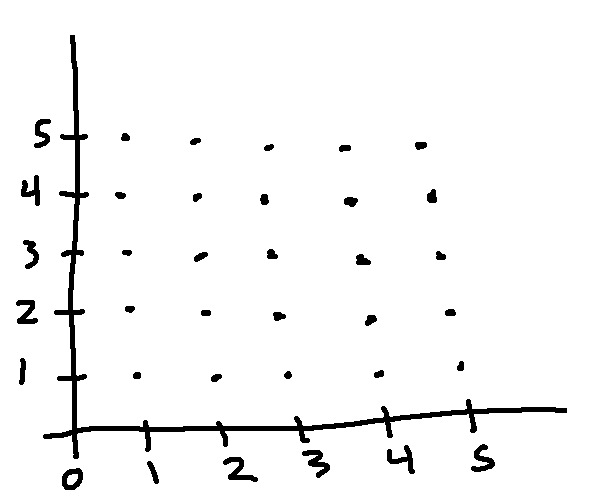

We can measure the size of finite sets by counting the number of elements. However, this doesn't work for infinite sets. Allowing \(\infty\) as a cardinality isn't sensitive enough, because it doesn't let us talk about whether all infinite sets are the same size.
We've seen another approach to comparing finite sets: two sets are the same size if and only if you can construct a bijection from one to the other. We'll use this as our definition of "same size," because it extends well to infinite sets.
For example, let's build a bijection f from \(\mathbb{N}\) to \(\mathbb{Z}\).
f(n) = n/2, if n is even
f(n) = -(n+1)/2, if n is odd
This maps the even natural numbers to the non-negative integers {0,1,2,....}. It maps the odd natural numbers to the negative integers. Quick check: f(1) = -1, so we're producing zero only once as an output value. So it's actually one-to-one and onto.
Some terminology:
Subsets of countable sets are countable. For example, consider the set of prime numbers, which is an infinite subset of the integers. We can put the prime numbers in the order that they inherit from the integers.
| _ | _ | 2 | 3 | _ | 5 | _ | 7 | _ | _ | _ | 11 | _ | 13 | _ | _ | 17 | ... |
Then squeeze out the spaces where numbers are missing:
| 2 | 3 | 5 | 7 | 11 | 13 | 17 | ... |
And now line them up against the natural numbers, so that the nth prime is mapped onto n.
| 2 | 3 | 5 | 7 | 11 | 13 | 17 | ... |
| 0 | 1 | 2 | 3 | 4 | 5 | 6 | ... |
Now, let's show that \(\mathbb{N}^2\) is countable by constructing a bijection from pairs of natural numbers to single natural numbers. I'm just going to draw a picture. You folks will work out the details of the map in tutorials.
We can imagine pairs of natural numbers as a grid of 2D points, like this:

Now let's number them in diagonal groups. (0,0) gets the number 0. Then (1,0) and (0,1) are numbered 1 and 2. Then (2,0), (1,1), and (0,2) are numbered 3, 4, and 5. And so forth.
We now have a way to assign a single natural number to each pair of natural numbers, and vice versa. So \(\mathbb{N}^2\) is countable.
The method of building a bijection works for simple examples but doesn't extend well to complicated ones. Let's introduce a second definition:
\(|A| \le |B|\) if and only if there is a one-to-one function from A to B.
This is somewhat like our definition of when two sets have the same size:
\(|A| = |B|\) if and only if there is a bijection from A to B.
There is a theorem that shows that these two definitions play nicely together.
Cantor-Schroeder-Bernstein Theorem: If \(|A| \le |B|\) and \(|B| \le |A|\), then \(|A| = |B|\).
This should seem obvious if the two sets are finite. It's a theorem because we're claiming that it's also true when the sets are infinite.
We don't have time to do the proof in this class, but you would have the background to understand the proof at this point. Well, ok, maybe not right now when it's the end of the term and you're tired. But perhaps over the summer, if you are curious.
Let's use the Cantor-Schroeder-Bernstein theorem to show that \(\mathbb{N}^2\) is countably infinite.
Part 1: find a one-to-one function \( f:\mathbb{N} \rightarrow \mathbb{N}^2\).
This is easy. For example, we could let f(n)=(n,0). This shows that \(|\mathbb{N}| \le |\mathbb{N}^2|\).
Part 2: find a one-to-one function \( g:\mathbb{N}^2 \rightarrow \mathbb{N}\).
Here's we're going use a trick: for each pair (p,q), set \(g(p,q) = 2^p3^q\). Since prime factorizations are unique, you can decode a pair \(2^p3^q\) and reconstruct the input pair (p,q). So g is one-to-one. This shows that \(|\mathbb{N}^2| \le |\mathbb{N}|\).
We now have \(|\mathbb{N}| \le |\mathbb{N}^2|\) and \(|\mathbb{N}^2| \le |\mathbb{N}|\). By the Cantor-Schroeder-Bernstein Theorem, this means that \(|\mathbb{N}^2| = |\mathbb{N}|\). So \(\mathbb{N}^2\) is countably infinite.
We did need a trick to build the one-to-one function in the second direction. But the proof is a lot less messy than constructing the bijection.